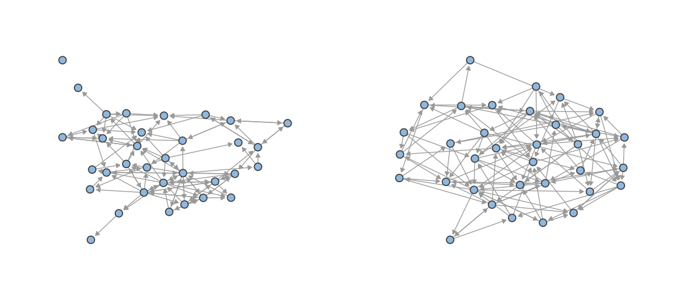
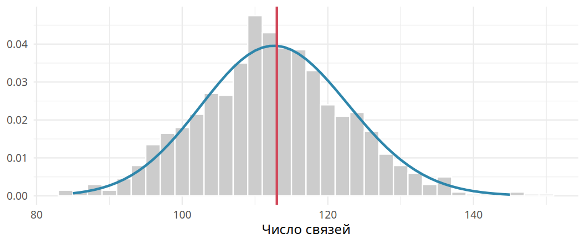
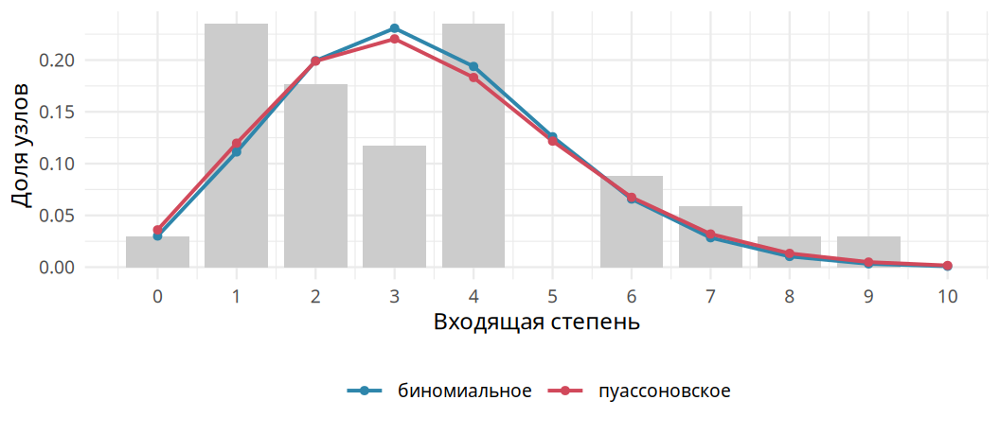
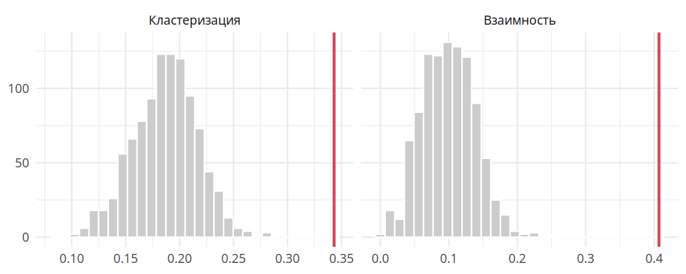

5 Случайные графы
До сих пор мы описывали сети: считали степени, центральности, взаимность, кластеризацию. Описание даёт картину сети. Следующий шаг состоит в том, чтобы понять, какие процессы могли её породить. Для этого строят модели: небольшой набор правил, по которым можно воссоздать сеть с похожими свойствами. Эта глава посвящена простейшей модели, в которой связи возникают совершенно случайно. Она служит точкой отсчёта для всех более сложных моделей.
5.1 Зачем нужны случайные сети
Представим группу первокурсников, которые ещё не знакомы друг с другом. Их сеть пуста: узлы есть, связей нет. Постепенно студенты знакомятся, ходят вместе в кино, готовятся к экзаменам. Связи появляются одна за другой. Через несколько месяцев складывается сеть дружбы с компаниями и одиночками.
По каким законам она складывается? Первые знакомства во многом случайны: кто с кем оказался за одной партой. Сложный мир проще всего моделировать как случайность. Дальше вступают в силу правила. Если у двух студентов появился общий друг, их знакомство становится вероятнее, чем знакомство двух случайных студентов. Каждая новая связь меняет вероятности следующих.
Чтобы отделить правила от случайности, нужна точка отсчёта. Представим, что связи появляются совершенно случайно. Какие сети при этом получаются? Если наблюдаемая сеть похожа на случайные по какой-то характеристике, эта характеристика не требует особого объяснения: её даёт и случайность. Если не похожа, нужен механизм, который объяснит различие. В статистике так работает нулевая модель, с которой сравнивают наблюдения.
5.2 Модели G(N, L) и G(N, p)
Сеть состоит из узлов и связей. Будем считать число узлов \(N\) фиксированным. Тогда остаётся решить, какие пары узлов связать. Классических способов сделать это случайно два.
В модели \(G(N, L)\) ровно \(L\) связей распределяются по парам узлов случайным образом. Её предложили венгерские математики Пал Эрдёш и Альфред Реньи (Erdős и Rényi 1959 г.). В модели \(G(N, p)\) каждая пара узлов связана независимо от других с вероятностью \(p\). Её независимо от них предложил американский математик Эдгар Гилберт (Gilbert 1959 г.). Первая модель фиксирует число связей, вторая фиксирует вероятность связи. Мы будем работать со второй: в ней проще считать свойства сети, а в реальных сетях число связей редко бывает заданным заранее.
Построить сеть по модели \(G(N, p)\) просто.
- Возьмите \(N\) узлов без связей.
- Для каждой пары узлов выберите случайное число от 0 до 1. Если оно меньше \(p\), свяжите пару. Иначе оставьте её несвязанной.
- В ненаправленной сети шаг 2 повторяется для всех \(N(N-1)/2\) пар, в направленной для всех \(N(N-1)\) упорядоченных пар.
По сути, для каждой клетки матрицы смежности подбрасывается монетка с вероятностью успеха \(p\). Каждый запуск даёт новую сеть, которую называют реализацией модели. Реализаций бесконечно много. Отдельная реализация интересна мало. Интересно распределение характеристик сети по множеству реализаций: число связей, средняя степень, кластеризация.
Какой взять \(p\), чтобы сравнивать случайную сеть с реальной? Естественно взять плотность реальной сети. Тогда в среднем в случайных сетях столько же связей, сколько в реальной. Для школьной сети \(p = 0{,}1007\). На рис. 5.1 наблюдаемая сеть сопоставлена с одной из случайных.
Разница заметна на глаз. В случайной сети почти у всех узлов похожее число связей, хабов нет. Нет и плотных компаний: связи разбросаны равномерно. В реальной сети есть ядро и периферия, есть группы, связанные внутри сильнее, чем между собой.
5.3 Число связей
Число связей в случайной сети тоже случайно. Найдём его распределение для ненаправленной сети. Обозначим число пар узлов \(M = N(N-1)/2\). Вероятность того, что сеть содержит ровно \(L\) связей, складывается из трёх множителей. Вероятность того, что \(L\) выбранных пар связаны, равна \(p^L\). Вероятность того, что остальные \(M - L\) пар не связаны, равна \((1-p)^{M-L}\). Число способов выбрать \(L\) пар из \(M\) равно биномиальному коэффициенту. Поэтому
\[ P(L) = \binom{M}{L} p^L (1-p)^{M-L}. \]
Запись \(P(L)\) читается «вероятность того, что связей ровно \(L\)». Справа перемножаются три множителя из предыдущего абзаца. Выражение \(p^L\) означает число \(p\), умноженное само на себя \(L\) раз: вероятности независимых событий перемножаются. Выражение \(\binom{M}{L}\) называют биномиальным коэффициентом и читают «число сочетаний из \(M\) по \(L\)». Оно показывает, сколькими способами можно выбрать \(L\) пар из \(M\). Например, \(\binom{4}{2} = 6\): из четырёх пар две можно выбрать шестью способами. Вычисляется оно как \(\frac{M!}{L!\,(M - L)!}\). Восклицательный знак обозначает факториал: произведение всех целых чисел от 1 до данного числа, например \(4! = 1 \cdot 2 \cdot 3 \cdot 4 = 24\).
Это биномиальное распределение: число успехов в \(M\) независимых испытаниях. Его математическое ожидание равно
\[ \bar L = pM = p\,\frac{N(N-1)}{2}, \]
а средняя степень равна
\[ \bar d = \frac{2\bar L}{N} = p(N - 1). \tag{5.1}\]
Математическим ожиданием называют среднее значение случайной величины по очень большому числу повторений. Черта над \(L\) снова обозначает среднее. Первая формула говорит: в среднем связанной окажется доля \(p\) всех \(M\) пар. Вторая формула получается из первой так же, как формула 2.2 в главе 2: удвоенное число связей делится на число узлов. После сокращения остаётся простое правило. Средняя степень равна вероятности связи, умноженной на число потенциальных соседей \(N - 1\).
Например, в случайной сети из 100 узлов с \(p = 0{,}1\) ожидается \(0{,}1 \cdot 4950 = 495\) связей, а средняя степень равна \(0{,}1 \cdot 99 = 9{,}9\). Для направленной сети число пар вдвое больше, \(M = N(N-1)\), а средние входящая и исходящая степени равны \(p(N-1)\).
Для школьной сети ожидаемое число связей равно \(0{,}1007 \cdot 34 \cdot 33 = 113\), то есть наблюдаемому. Так и должно быть: \(p\) подобрано по плотности. На рис. 5.2 показано распределение числа связей в тысяче случайных сетей. Наблюдаемое значение лежит в его центре. При этом разброс велик: случайные сети содержат от 83 до 151 связей.

5.4 Распределение степеней
Теми же рассуждениями найдём распределение степеней. Узел может быть связан с каждым из \(N - 1\) остальных независимо с вероятностью \(p\). Вероятность того, что у него ровно \(d\) связей, равна
\[ p(d) = \binom{N-1}{d} p^d (1-p)^{N-1-d}. \]
Формула устроена так же, как формула для числа связей. Только испытаний теперь не \(M\), а \(N - 1\): по одному на каждого возможного соседа узла. Множитель \(p^d\) отвечает за \(d\) состоявшихся связей. Множитель \((1-p)^{N-1-d}\) отвечает за остальные, несостоявшиеся. Биномиальный коэффициент считает, сколькими способами можно выбрать \(d\) соседей из \(N - 1\) кандидатов.
Реальные сети, как правило, разрежены: реализована очень малая доля возможных связей. При малом \(p\) биномиальное распределение хорошо приближается распределением Пуассона:
\[ p(d) = e^{-\bar d}\, \frac{\bar d^{\,d}}{d!}. \tag{5.2}\]
Буква \(e\) обозначает математическую постоянную \(e \approx 2{,}718\). Выражение \(e^{-\bar d}\) есть \(e\) в степени «минус средняя степень». Запись \(\bar d^{\,d}\) означает среднюю степень, возведённую в степень \(d\). Слово «степень» встречается здесь в двух смыслах: как число связей узла и как математическая операция. Знаменатель \(d!\) есть факториал числа \(d\). Например, при средней степени 3 вероятность того, что у узла ровно две связи, равна \(e^{-3} \cdot 3^2 / 2! \approx 0{,}05 \cdot 9 / 2 \approx 0{,}22\).
Распределение Пуассона описывает число редких событий за определённый период. Так можно описать, например, число пациентов с переломом ноги, поступивших в травмпункт за вечер. Его единственный параметр \(\lambda\) равен среднему числу событий. Здесь это средняя степень \(\bar d\). Распределение Пуассона удобнее биномиального: оно зависит от одного параметра, а не от двух. От размера сети \(N\) оно не зависит. Поэтому распределение степеней случайного графа часто называют пуассоновским, а сам граф пуассоновским графом.
На рис. 5.3 распределение входящих степеней школьной сети сравнивается с теоретическими. Биномиальное и пуассоновское распределения почти совпадают. Наблюдаемое распределение от них заметно отличается. В реальной сети больше узлов с одной связью и больше узлов с шестью и более связями. Узлов со средними степенями меньше, чем ожидалось бы. Распределение реальной сети шире и скошено вправо.

5.5 Случайные и реальные сети
Сравним реальную и случайные сети по нескольким характеристикам сразу. В табл. 5.1 для каждой характеристики приведены её значение в школьной сети, среднее по тысяче случайных сетей и интервал, в который попадают 95% случайных сетей.
| Характеристика | Школа | Случайные: среднее | 95% случайных |
|---|---|---|---|
| Число связей | 113 | 113 | 94 ... 133 |
| Взаимность | 0,41 | 0,10 | 0,03 ... 0,18 |
| Кластеризация | 0,34 | 0,19 | 0,12 ... 0,24 |
| Разброс входящих степеней (ст. откл.) | 2,28 | 1,72 | 1,30 ... 2,17 |
| Разброс исходящих степеней (ст. откл.) | 2,89 | 1,71 | 1,29 ... 2,14 |
| Среднее расстояние | 3,10 | 2,90 | 2,58 ... 3,32 |
| Диаметр | 7 | 7 | 5 ... 9 |
По числу связей, среднему расстоянию и диаметру школьная сеть типична для случайных сетей. Три характеристики выделяются резко. Кластеризация школьной сети равна 0,34, а у случайных сетей в среднем 0,19. Ни одна из тысячи случайных сетей не достигла наблюдаемого значения. Взаимность школьной сети в четыре раза выше случайной: в случайной сети ответная связь возникает лишь с вероятностью \(p\). Разброс степеней в школьной сети тоже больше, чем почти в любой случайной сети. Распределение рис. 5.4 показывает это для кластеризации и взаимности.

Эти различия встречаются не только в школьном классе. Высокая кластеризация и скошенное распределение степеней отличают от случайных сетей огромное количество реальных сетей: дружеских, научного соавторства, взаимодействий белков, интернета (Barabási 2016 г.).
5.5.1 Маленький мир
Совпадение средних расстояний не менее поучительно. Нас часто удивляет, что между любыми двумя людьми на Земле лишь несколько рукопожатий. Однако короткие расстояния ожидаемы и в случайной сети. Если у каждого узла в среднем \(\bar d\) соседей, то за \(k\) шагов достижимо примерно \(\bar d^{\,k}\) узлов. Вся сеть из \(N\) узлов оказывается достижимой, когда \(\bar d^{\,k} \approx N\), то есть при
\[ k \approx \frac{\ln N}{\ln \bar d}. \]
Знак \(\approx\) читается «приблизительно равно». Буквами \(\ln\) обозначают натуральный логарифм. Логарифм отвечает на вопрос, в какую степень нужно возвести основание, чтобы получить данное число. Формула получается из равенства \(\bar d^{\,k} = N\): если взять логарифм от обеих частей, получится \(k \ln \bar d = \ln N\). Главное в формуле видно без вычислений. Число шагов растёт как логарифм размера сети, то есть очень медленно. Если сеть вырастет в тысячу раз, при 150 знакомых число шагов увеличится лишь на \(\ln 1000 / \ln 150 \approx 1{,}4\).
Для восьми миллиардов людей, у каждого из которых около 150 знакомых, получаем \(\ln(8 \cdot 10^9)/\ln 150 \approx 4{,}6\). Мир мал не потому, что люди особенные. Малые расстояния неизбежно возникают в любой большой сети со случайными связями.
5.5.2 Что дальше
Случайная модель хорошо воспроизводит число связей, среднюю степень и расстояния. Взаимность, кластеризацию и неравенство степеней она не воспроизводит. Чтобы модель стала реалистичнее, вероятность связи должна зависеть от контекста. Связь, отвечающая на уже существующую связь, должна получать бонус. Связь, замыкающая треугольник, тоже должна получать бонус. Связь, ведущая к узлу с большим числом связей, может получать бонус, а связь к узлу без связей может получать штраф. Модели, построенные по такому принципу, называются экспоненциальными моделями случайных графов. Им посвящена глава 6.
5.6 В R
Функции sample_gnp() и sample_gnm() строят случайные сети по моделям \(G(N, p)\) и \(G(N, L)\):
p <- edge_density(school)
g1 <- sample_gnp(n = 34, p = p, directed = TRUE)
g2 <- sample_gnm(n = 34, m = 113, directed = TRUE)Чтобы получить распределение характеристики, сеть генерируют много раз. Затем смотрят, где в этом распределении находится наблюдаемая сеть:
set.seed(1312)
trans_rnd <- replicate(1000, {
g <- sample_gnp(34, p, directed = TRUE)
transitivity(g, type = "global")
})
mean(trans_rnd >= transitivity(school, type = "global")) # доля не меньших
hist(trans_rnd)
abline(v = transitivity(school, type = "global"), col = "red")Теоретические распределения степеней дают dbinom() и dpois().
5.7 Вопросы и упражнения
- Сколько связей в среднем будет в ненаправленной случайной сети из 1000 узлов с \(p = 0{,}01\)? Какова средняя степень?
- Почему наблюдаемое число связей школьной сети обязательно оказывается в центре распределения на рис. 5.2? Какие характеристики можно проверять таким сравнением, а какие нельзя?
- Почему взаимность случайной направленной сети примерно равна \(p\)?
- Сравните кластеризацию сети карате-клуба с кластеризацией случайных сетей той же плотности.
- Оцените по формуле маленького мира среднее расстояние в сети студентов университета из 10 000 человек, у каждого из которых около 50 знакомых.